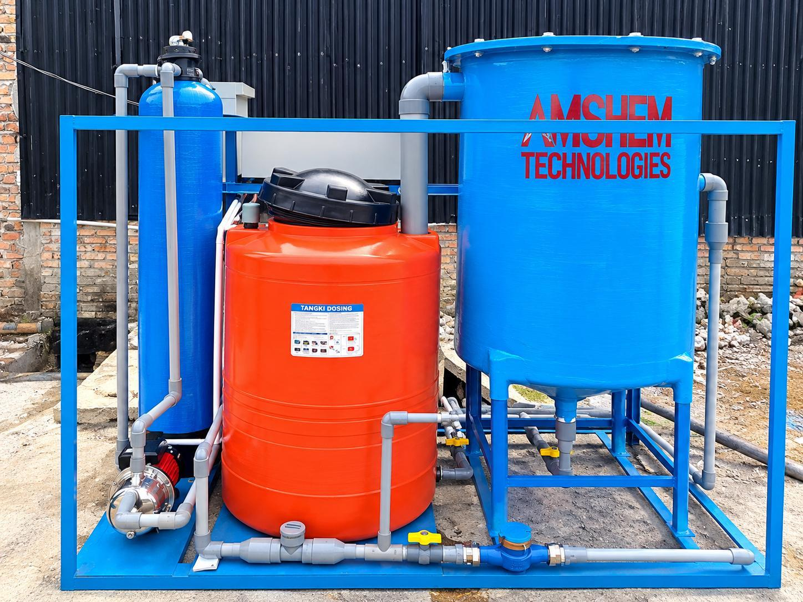
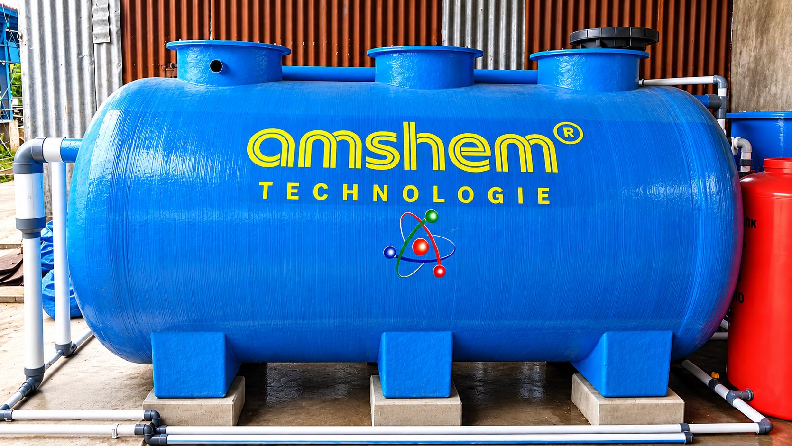
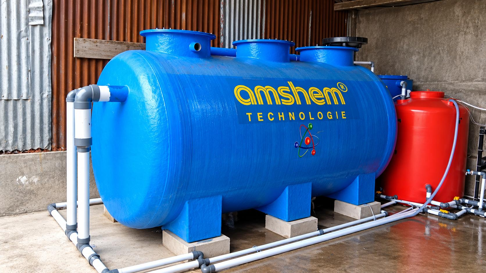

IPAL Industri
Perencanaan dan pembangunan sistem IPAL sesuai jenis proses produksi dan karakteristik air limbah.
WASTEWATER • ENGINEERING • SOLUTION
Perencanaan, pembangunan, revitalisasi dan pengelolaan sistem IPAL industri serta IPAL komunal yang efektif, efisien dan mudah dioperasikan.
ABOUT ALFA MEDIA SOLUSINDO
PT. Alfa Media Solusindo hadir untuk membantu industri, kawasan, fasilitas pelayanan, dan pelaku usaha membangun sistem pengolahan air limbah yang tepat guna.
Pendekatan kami menggabungkan kebutuhan proses, kondisi lapangan, kapasitas pengolahan, efisiensi operasional dan target kualitas effluent dalam satu sistem yang terukur.
Pelajari layanan kami →OUR SERVICES
Sistem dirancang berdasarkan kondisi aktual air limbah dan kebutuhan operasional pengguna, bukan sekadar pendekatan satu teknologi untuk semua.
Perencanaan dan pembangunan sistem IPAL sesuai jenis proses produksi dan karakteristik air limbah.
Sistem pengolahan terpusat untuk kawasan permukiman, fasilitas publik, komersial dan fasilitas bersama.
Evaluasi, perbaikan proses dan peningkatan kinerja instalasi IPAL yang telah beroperasi.
Pendampingan operasional, monitoring proses, preventive maintenance dan optimasi sistem.
Kajian teknis, evaluasi kebutuhan kapasitas, pemilihan teknologi dan rekomendasi sistem pengolahan.

WASTEWATER TREATMENT
Konfigurasi IPAL dapat dikembangkan dari kombinasi proses fisika, kimia dan biologi, disesuaikan dengan karakteristik influent, luas area, target effluent dan kebutuhan operasional.
WHY ALFA MEDIA SOLUSINDO
Desain disusun berdasarkan kebutuhan dan karakteristik aktual air limbah.
Pengolahan diarahkan untuk mendukung pencapaian target kualitas effluent.
Mempertimbangkan efisiensi investasi, biaya operasi, ruang dan kemudahan maintenance.
Pendampingan commissioning, evaluasi performa dan kebutuhan pengembangan sistem.
SYSTEM & PROJECT
Dokumentasi berikut digunakan sebagai visual awal website. Halaman portofolio lengkap akan kita kembangkan pada tahap berikutnya.


OUR APPROACH
START A PROJECT
Sampaikan jenis kegiatan, kapasitas, kondisi IPAL saat ini atau kebutuhan pembangunan baru. Tim kami akan membantu menentukan pendekatan awal yang tepat.